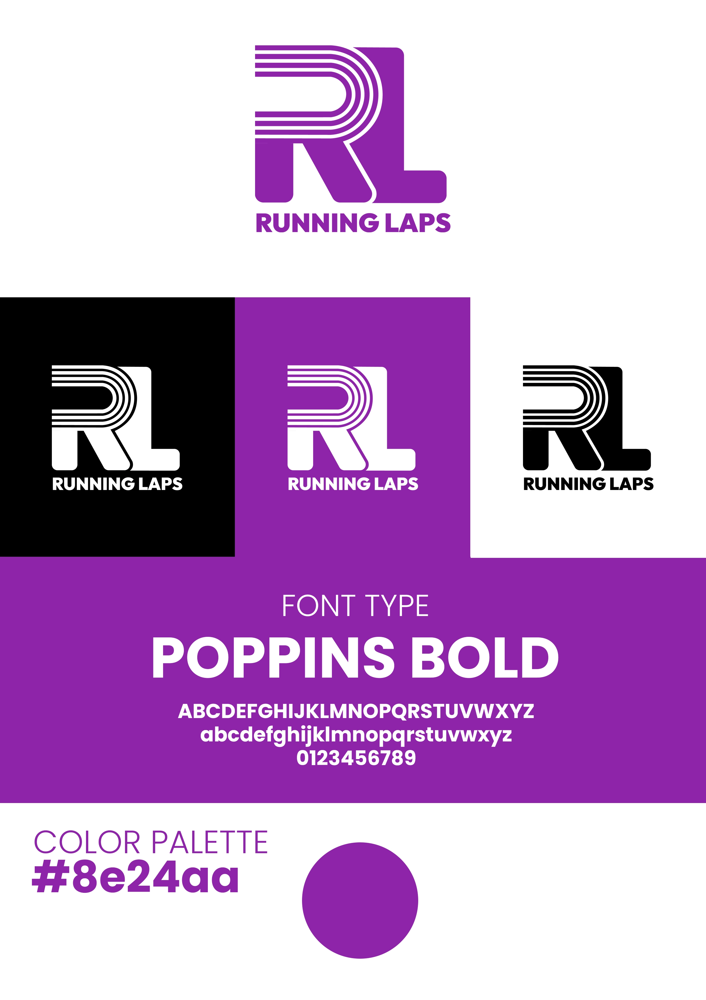

Briefing básico:
Coro de mujeres de Córdoba que quería reflejar feminismo, unión y lucha contra la violencia de
género
Elementos de la identidad:
Isotipo: Perfil de mujer dentro de un círculo/luna creciente, simbolizando
feminidad y cohesión
grupal
Colores: Violetas #c3a6cf y #8b5ca2, que transmiten creatividad, sensibilidad
y sororidad
Tipografía: Satoshi, clara y equilibrada
Resultado:
El círculo y la luna representan unión, feminidad y trabajo en grupo. La paleta violeta refuerza
la identidad feminista y creativa del coro. La tipografía aporta claridad y modernidad, haciendo
que el conjunto transmita fuerza colectiva y compromiso social
Briefing básico:
El cliente quería una identidad muy sencilla y minimalista, pensada para ser aplicada en una
app, que comunicara de manera clara localización y gastronomía
Elementos de la identidad:
Isotipo: Combinación de marcador de ubicación y un bocado, reflejando comida y
localización
Color: #FF5000, que aporta energía y visibilidad
Tipografía: New Title, limpia y contemporánea
Resultado:
La simplicidad del isotipo permite que sea reconocido fácilmente en digital y app, incluso en
tamaños pequeños. El color vibrante comunica dinamismo y atractivo, mientras que la tipografía
refuerza la claridad y modernidad. El conjunto logra un sistema visual simple, funcional y
fácilmente aplicable a distintos soportes
Briefing básico:
El cliente proporcionó únicamente el color (#8e24aa) y dio libertad total para el resto de la
identidad
Elementos de la identidad:
Isotipo: Integración de las iniciales R y L mediante líneas paralelas que
evocan pistas de
atletismo
Color: #8e24aa, transmitiendo energía y personalidad
Tipografía: Poppins Bold, para claridad y presencia visual
Resultado:
El símbolo comunica dinamismo y movimiento propio del deporte. El color aporta fuerza y
presencia, mientras que la tipografía refuerza legibilidad y carácter atlético. La identidad
refleja rendimiento, energía y modernidad, adaptándose a merchandising, digital y branding
corporativo
Briefing básico:
El cliente quería centrarse en el concepto de comunidad, buscando transmitir cercanía, calidez y
un ambiente acogedor alrededor de su panadería casera
Elementos de la identidad:
Logotipo: Lettering redondeado acompañado de un gorro de panadero, evocando
cercanía y tradición
artesanal
Colores: Tonos cálidos, que remiten al pan recién horneado
Tipografía: General Sans Semibold, moderna y legible
Resultado:
El estilo visual transmite calidez y familiaridad, reforzando la idea de comunidad y proximidad.
El gorro de panadero y el lettering redondeado crean un lenguaje cercano, mientras que la
tipografía moderna aporta claridad y profesionalismo. El conjunto comunica autenticidad,
tradición y cercanía emocional
Briefing básico:
El cliente dio libertad creativa, pero con los requisitos de que no apareciera ningún tatuaje,
que el resultado se entendiera como relacionado con la temática del evento (cáncer y
concienciación), y que combinase con el logo de otra entidad, también morada
Elementos de la identidad:
Sistema visual: Nombre del evento dividido por una cicatriz que se transforma en una flor, que funciona tambié por separado
Colores: violetas Pantone 265C y 2567C, armonizando con el logo de la otra entidad
Tipografía: combinación de Poppins (claridad) y Bodoni Moda (carácter editorial y elegante)
Resultado:
El sistema visual transmite sensibilidad, creatividad y carácter cultural sin mostrar tatuajes
explícitos. La paleta violeta genera coherencia con la otra entidad y aporta elegancia y
sensibilidad. Las tipografías equilibran claridad y estilo editorial, reforzando la identidad de
un evento profesional y cultural que también conecta con la temática de concienciación sobre el
cáncer